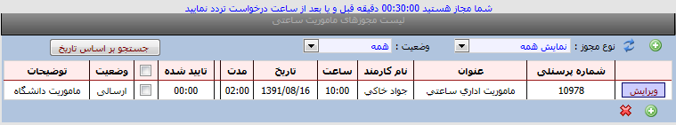
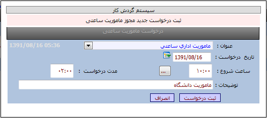

ماموریت ساعتی
امکانات:
نمایش لیست درخواستهای ماموریت ساعتی
ثبت و ویرایش و حذف درخواستهای ماموریت ساعتی
نکته : گزینه شما مجاز هستید30دقیقه قبل و بعد از ساعت درخواست تردد نمایید به این معنی است که تلرانس تعریف شده در برنامه شما 30دقیقه است .
بطور مثال :در نمونه قابل مشاهده در تصویر ،پرسنلی که از ساعت 10به ماموریت ساعتی شخصی می رود به مدت 2ساعت از ساعت 9:45لغایت 10:15مجاز است از شرکت خارج شده و روی دستگاه تردد وارد نماید در غیر اینصورت هیچ ماموریتی برای آن پرسنل ثبت نخواهد شد.

روش ثبت یک درخواست :
ابتدا کلید جدید را می زنیم سپس مطابق تصویر از منوی عنوان مجوز ،مجوز ماموریت مورد نظر را انتخاب و از منوی تاریخ ،تاریخ درخواست و ساعت شروع ماموریت را وارد نموده و در قسمت مدت درخواست ،مدت ماموریت ساعتی را وارد نموده سپس با کلید ثبت درخواست، تایید می نمایید.
نکته :درصورتیکه ماموریت ساعتی تا پایان وقت اداری می باشد تا پایان شیفت ساعت را محاسبه و در قسمت مدت وارد نمایید.
روش حذف یک درخواست:
پس از ثبت یک درخواست تا زمانیکه درخواست بوسیله مدیر تایید نشده باشد امکان حذف وجود دارد .
ابتدا گزینه لیست درخواستها را انتخاب سپس کلید ویرایش را زده و کلید حذف را می زنید تا درخواست از لیست حذف گردد.
کلید وضعیت :بوسیله این کلید می توانید درخواستهای ارسال شده /رد شده /تایید شده و همه درخواستها را انتخاب نمایید.
کلید جستجو براساس تاریخ :با کلید جستجو براسا تاریخ می توانید درخواستها را براساس تاریخهاییی که وارد می نمایید مشاهده نمایید.
